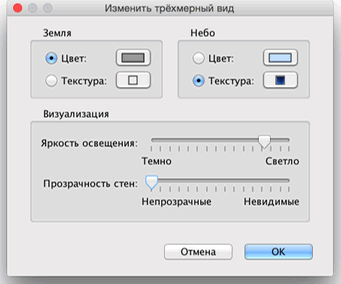

| Редактирование вида 3D | |||
Для переключения между двумя точками просмотра вида 3D, кликните Вид 3D > Вид сверху или Вид 3D > Виртуальный визит.
Когда выбран Вид сверху, 3D показывает план в трехмерном виде с верхней точкой просмотра.
В этом режиме, перемещая мышку влево или право с зажатой левой кнопкой, Вы можете управлять обзором по вертикальной оси центра плана, а перемещая мышь вперед и назад, с зажатой левой кнопкой, Вы управляете обзором по горизонтальной оси.
С помощью колеса прокрутки меняется масштаб вида 3D. Когда выбран Виртуальный визит , виртуальный визитер тоже показан на планах. Его положение и поворот синхронизируется с его управлением и обновляется при изменении. Виртуальный визитер снабжен 4 индикаторами.
|


|
Когда мышка находится над визитером, то появляется всплывающее окно, которое так же позволяет изменить значение параметров Другие атрибуты могут быть изменены в Вид 3D> Изменить....  В панели вида 3D Вы можете изменить поле обзора виртуального визитера, его высоту, цвет земли и неба, текстуру пола, яркость освещения и прозрачность стен. |
|